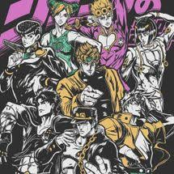
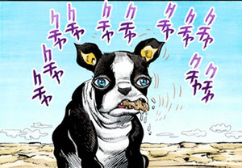
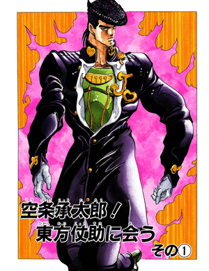

alt="Explicação resumida sobre a Imagem escolhida, para as pessoas com dificuldades visuais.">Meu primeiro post
Por: Guilherme Maidl
Boas-vindas! Aqui vou compartilhar algumas curiosidades.


O traço de Hirohiko Araki durante a série está em constante transformação
Por: Guilherme Maidl
JoJo é um dos mangás mais longos da história, e suas mudanças de estilo são evidentes ao longo da publicação. Iggy é um exemplo marcante, tendo seu design alterado radicalmente em poucos capítulos, mudança que o anime preservou. Essas transformações ficaram ainda mais evidentes na Parte 4, quando Araki abandonou gradualmente o visual musculoso por um estilo mais simples, provavelmente acompanhando as mudanças no padrão estético dos anos 90.
Mudança de nome por direitos autorais
Por: Guilherme Maidl
Esta é a primeira aparição oficial de Giorno Giovanna. Seu estande, Golden Experience, recebeu o nome de uma música de Prince e tem o subtítulo “Golden Wind” para evitar violação de direitos autorais.
Jotaro é o Jojo mais conhecido
Por: Guilherme Maidl
Apesar de Joseph ser o favorito de muitos fãs, Jotaro é provavelmente o personagem mais popular de JoJo, especialmente no Japão e nos Estados Unidos. Seu visual marcante, o famoso boné e sua personalidade ajudaram a transformá-lo em um dos grandes símbolos da franquia. A popularidade nos EUA pode estar ligada ao fato de que o primeiro grande contato do público americano com JoJo foi através do game estrelado por Jotaro. Sua fama é tanta que ele frequentemente aparece como destaque nas capas e materiais promocionais da série.
Nome do Giorno
Por: Guilherme Maidl
O “Gio” no nome de Giorno Giovanna é pronunciado corretamente como “Jo” em italiano. Além disso, “Gio” é próximo ao nome de seu pai biológico, Dio Brando. Como a maior parte do corpo de Dio na parte 3 era o corpo de Jonathan Joestar, isso faz de Giorno um humano completo, e não um meio-vampiro.
Giorno originalmente era mulher
Por: Guilherme Maidl
Giorno foi originalmente projetada para ser mulher, mas Araki mudou de ideia depois que seu editor avisou que a Parte 5 poderia não vender bem para o público. Apesar de ter sido transformado em homem, Araki ainda modelou Giorno fortemente em motivos femininos e andróginos. Seu nome de nascimento “Haruno Shiobana” é notavelmente feminino, as habilidades vitais da Gold Experience aludem à capacidade da mulher de dar à luz e “Giovanna” é um primeiro nome feminino.
Easter egg no anime
Por: Guilherme Maidl
No anime de Jojo um pequeno easter egg aparece quando Joseph está lendo uma história em quadrinhos. Trata-se de Baooh! um antigo mangá do autor, em que Araki avia feito antes de JoJo’s Bizarre Adventure.Curiosamente no mangá original Joseph estava lendo o primeiro HQ de Superman mas isso foi alterado para não oferecer problemas de direitos autorais.